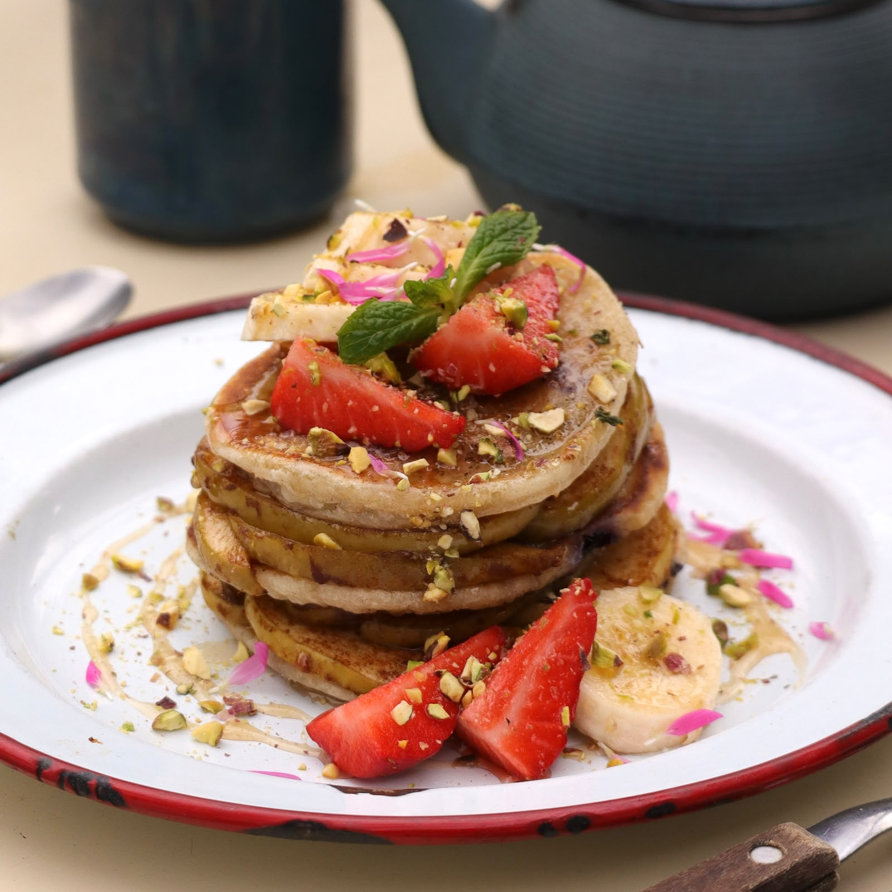
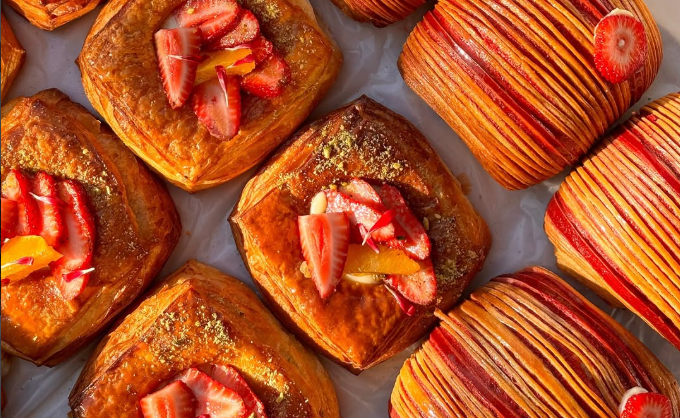
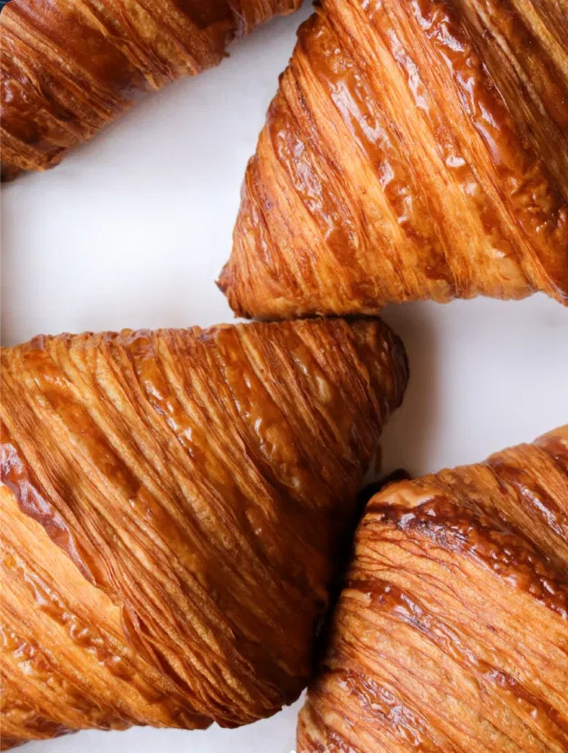
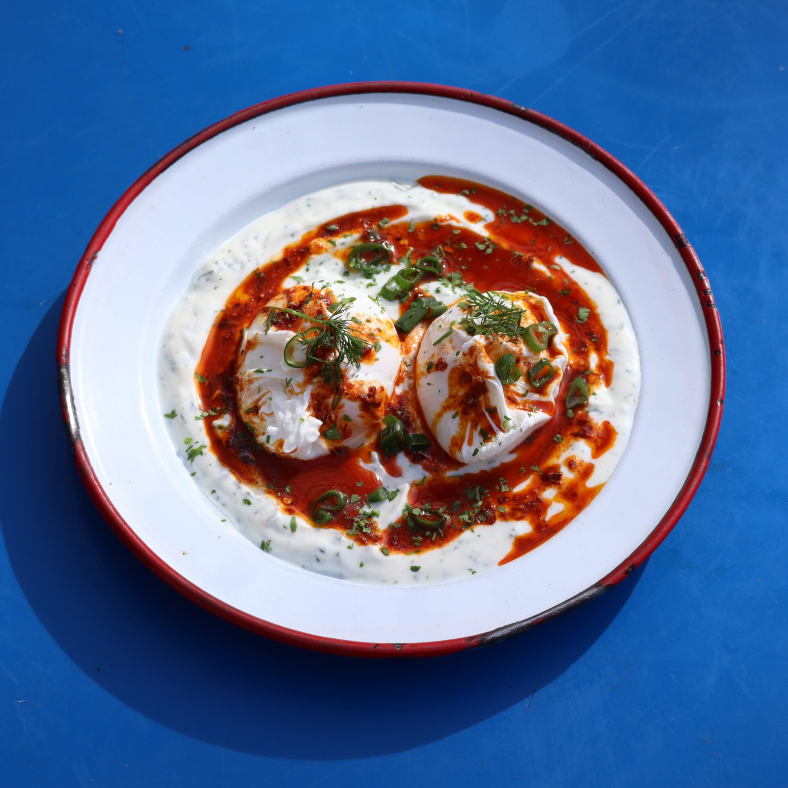
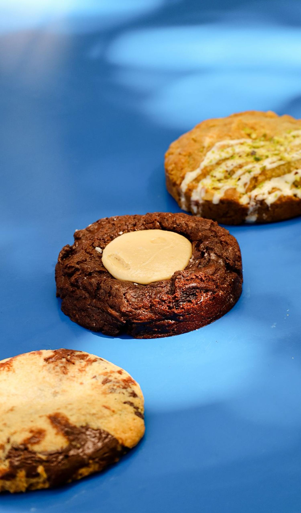

Torre de Pancakes
Pancakes de arándanos con manzana asada, banana, ciruela, miel de hibiscus, escamas de coco y pistacho
$ 13.000

Descubrí BluUna casita de madera con toldo a rayas, mesas en la vereda y una barra donde el café se prepara sin apuro. Vení a desayunar, a trabajar un rato o a merendar con amigos.

Del primer café de la mañana al almuerzo.
Luz natural, plantas, el mural azul del patio y café filtrado en chemex. Mirá cómo se vive un día en Blu.
Conocé el espacio
Pancakes de arándanos con manzana asada, banana, ciruela, miel de hibiscus, escamas de coco y pistacho
$ 13.000

Yogurt especiado con dos huevos poché y chili oil.
$ 13.000

Cookie doble chocolate, con un relleno de mantequilla de maní y chocolate blanco y un toque de sal en escamas
$ 7.800
Juan B. de La Salle 441, San Isidro · Mar–Dom desde las 8